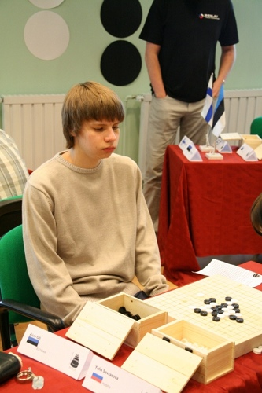
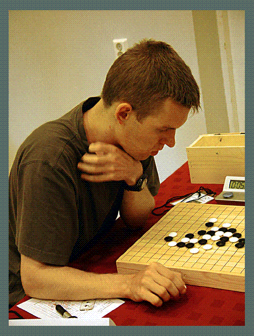
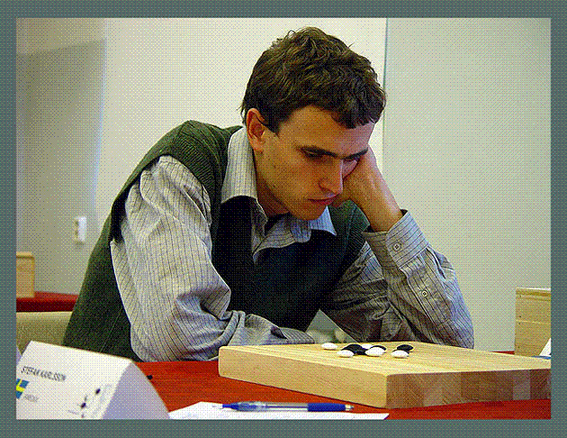
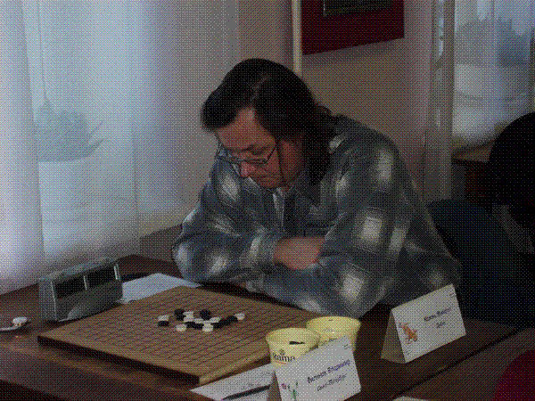
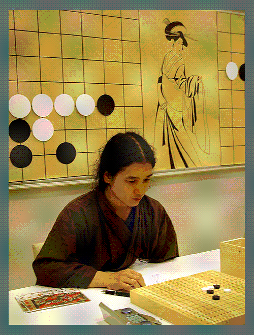
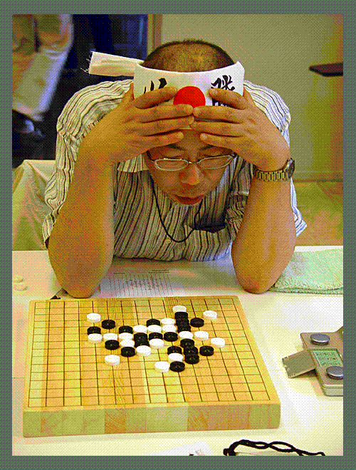
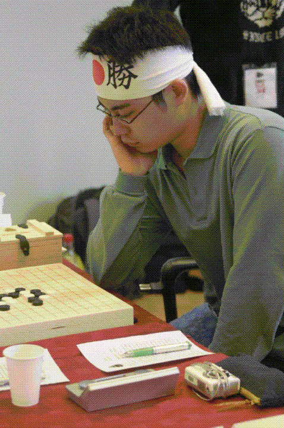
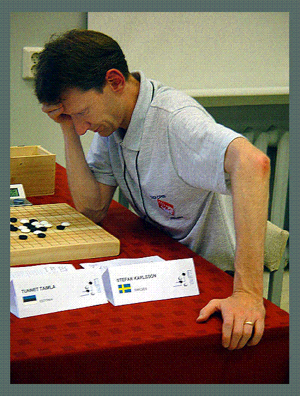
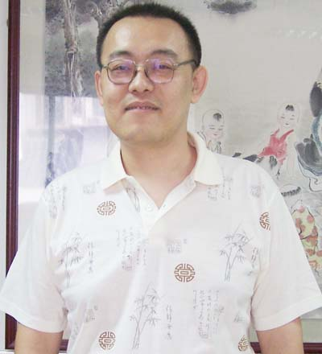

第十届世锦赛A组选手介绍
#1 第十届世锦赛A组选手介绍作者：有志青年 发表时间：2007-8-9 17:04:27
原文地址http://www.shwzq.com/qishou/ShowArticle.asp?ArticleID=1558
第十届世界连珠锦标赛A组选手
种子选手
Taimla Tunnet EST 8dan

Oll Aivo EST 6dan
Purk Andry EST 6dan

Sushkov Vladimir RUS 8dan

Chingin Konstantin RUS 7dan

Kozhin Mikhail RUS 5dan

Yamaguchi Yusui JAP 9dan
晋级选手

Iio Yoshihiro JAP 7dan
Savrasova Yulia RUS 7dan

Okabe Hiroshi JAP 7dan

Karlsson Stefan SWE 8dan

Wu Di CHN 5dan
#2 Re:第十届世锦赛A组选手介绍作者：飞飞 发表时间：2007-8-9 17:39:19
不错，这些照片哪弄来的．．．